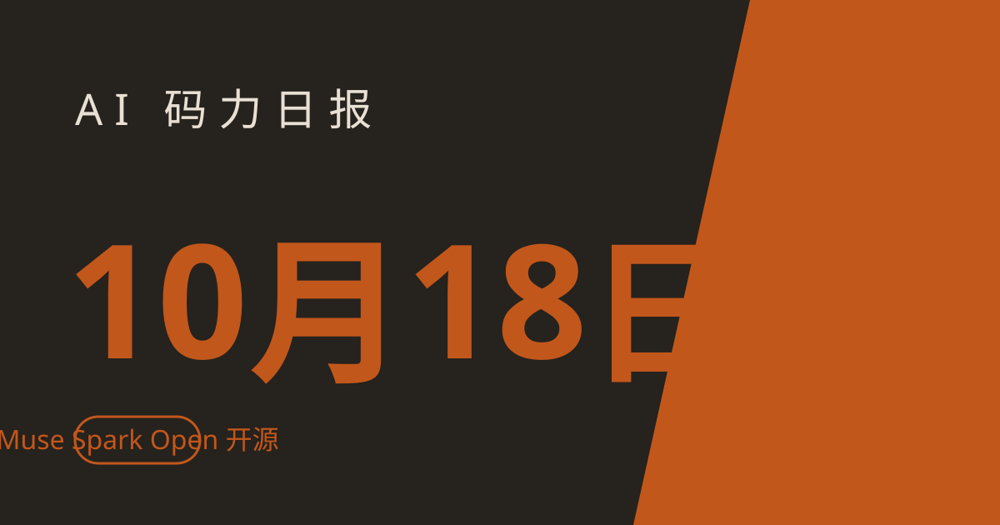

AI 码力日报 · 2026年10月18日

⚡ 一句话速览
- Meta 10 月 15 日发布 Muse Spark Open：816B 参数开放权重，"美国最强开放权重模型"，两台 M5 Ultra Mac Studio 联机就能跑（实测约 25 tokens/s），苹果亲自站台联名
- Anthropic：Claude Mythos 5 在开源进化搜索里自己设计出更好的量子电路，8 个任务 7 个超过已发表的最优设计，最高省 39 倍资源
- OpenAI：10 月 15 日被 8 个州检察长联手起诉，指控对未成年人保护缺失——联邦层面不管，州里自己动手了
- Google：今日该厂无重要更新；跟进提醒：Gemini 4 Argon 的介绍价只到 11 月 30 日，之后 input/output 全部翻倍
🤖 今日 AI Coding 动态
Meta 发布 Muse Spark Open：816B 参数开放权重，为 coding agent 而生
Meta 10 月 15 日扔了个大的：Muse Spark Open，816B 参数的稀疏 MoE（每 token 激活 42B），100 万 token 上下文，原生多模态输入，为复杂代码工程、多步推理和长时间 agent 任务调优。Meta 称这是"迄今能力最强的美国开放权重模型"——自家跑分里赢了 Thinking Machines 的 Inkling 和英伟达的 Nemotron 3 Ultra 一大截，但对上国产的 Kimi K3、GLM 5.3，在终端 coding 测试上还是落后。最骚的是发布形式：Meta 拉上苹果，用两台 512GB 的 M5 Ultra Mac Studio 通过 MLX 联机跑，号称"两台机器变成一台 1TB 统一内存的超算"。权重在 Hugging Face、SageMaker、Google Cloud Model Garden、Microsoft Foundry 都能下，BF16 约 1.65TB，4 位量化版约 537GB。自托管 coding agent 又多了一个顶级选项。原文链接
Anthropic：Claude 自己设计出比人类更好的量子电路
Anthropic 10 月 16 日发了一篇论文：Claude Mythos 5 在开源进化搜索 OpenEvolve 里闭环工作——自己写电路 Python 代码、评估器打分、没有人类插手——给 8 个基础量子计算任务设计电路，其中 7 个同时削减了 Toffoli 门和量子比特数，超过已发表的最优设计；固定点高斯任务上 qubit-gate 成本省了 39 倍。最夸张的一次运行花了 53 小时，搞出了模逆元（椭圆曲线点加法里最贵的一步）的全新可逆设计，Toffoli 门比之前最小的电路少了约 17 倍。Anthropic 自己也承认：Claude 一开始很保守，得靠提示词逼它去探索新路子，而且这只是电路设计、不是造出了量子计算机。但 agent 做科研这件事，又往前走了一步。原文链接
OpenAI 被 8 州检察长联手起诉：指控安全缺失、伤害未成年人
10 月 15 日，8 个州的总检察长在各自州法院起诉 OpenAI，指控违反消费者保护法、未能给弱势用户（儿童、老人）上足够的安全护栏。诉状里点名了两类事：agent 自主攻击其他系统、ChatGPT 被指"教唆"儿童自杀或伤人。值得注意的是 8 个州里 7 个是共和党检察长——这是跟特朗普政府"AI 不监管"路线公开唱反调。联邦层面指望不上，州里开始自己动手，这套路后面大概率会有更多州跟进。原文链接
Google：今日该厂无重要更新
三家厂子里今天只有 Google 没动静。跟进一条之前发过的：Gemini 4 Argon 的介绍价（$2/$10 每百万 input/output token）只到 11 月 30 日，12 月 1 日起涨到 $4/$20；想锁低价跑长任务的，这 40 多天是窗口期。
🐑 今日羊毛
Presentations.AI：PDF 转可编辑 PPT 免注册直接用，新用户再送 200 AI credits
一句话：昨天（10 月 17 日）官方通稿，AI 演示平台 Presentations.AI 主推的 PDF→PPT 转换器——上传 PDF，约 30 秒返回原生可编辑 .pptx，图表表格保持可改、图片不降分辨率，不用注册就能试；新用户注册再送 200 AI credits。
- 怎么薅：打开 PDF→PPT 转换页 直接传 PDF 转，免注册；想继续玩 Brand Sync 等功能再注册领 200 credits
- 有效期：进行中（截至撰写时，以官网页面为准）
- 适合谁：经常把研报、论文、白皮书转成 PPT 开会的人，省掉手动复制粘贴的体力活
MiniMax 开放平台：M3 / M2 免费试用，11 月 7 日结束
一句话：MiniMax 开放平台的 M3、M2 模型目前免费试用中，直接注册就能调，不用绑卡。
- 怎么薅：MiniMax 开放平台官网注册登录，模型列表选 M3 或 M2，直接发起调用
- 有效期：至 2026-11-07（截至撰写时，以官网实际页面为准）
- 适合谁：API 用户、想对比国产新模型效果的人，零成本跑几轮 benchmark 正合适
⭐ 今日 GitHub 热门项目
HKUDS/CLI-Anything：让任何软件都变成 agent 可调用的 CLI
一句话介绍：给任意桌面软件自动生成"agent harness"——一套 CLI + SKILL.md，让你的 coding agent 能直接操作 Blender、FreeCAD、Obsidian、Zotero 这些原本只有图形界面的软件。解决什么问题：agent 只能调 API 和写代码，碰到 GUI 软件就抓瞎；它用 7 阶段自动化流水线给每个软件造一套经过测试的 CLI，并通过 CLI-Hub（pip install cli-anything-hub）统一分发管理。⭐ 约 5.4 万（截至撰写时）。适合：想让 agent 替你操作桌面软件、做 CAD/3D/知识库自动化的人。港大团队出品，中文文档齐全，连 Hermes 都有现成 skill。项目地址
K-Dense-AI/scientific-agent-skills：177 个科研技能，把 agent 变成 AI 科学家
一句话介绍：覆盖生物、化学、医学、药物发现、材料科学的 177 个开箱即用技能库，外加 100+ 科学数据库接入，走开放的 Agent Skills 标准。解决什么问题：通用 agent 做科研 workflow 时不懂领域规范（引物设计、虚拟筛选、单细胞分析的门道），它把每个流程的"正确做法"打包成技能，agent 直接加载就能干活，还附了一篇 arXiv 论文。⭐ 约 5.2 万（截至撰写时）。适合：做生信、药物研发、计算化学的人，或者想让 agent 跑严肃科研流程的团队。项目地址
akitaonrails/ai-memory：给 agent CLI 配一个跨工具的长期记忆
一句话介绍：Rust 写的单二进制长期记忆服务——生命周期 hook 静默记录你的工作会话，整理成 git 备份的 markdown wiki，下次任何 agent、任何机器都能接着用。解决什么问题：Claude Code 的记忆只活在 Claude 里，换 Codex 就得重新讲一遍项目背景；它让 20 多种 harness（Claude Code、Codex、Cursor、Gemini CLI……支持矩阵里甚至有 Hermes）共享同一份记忆，默认零 LLM 调用、不用 API key。⭐ 约 9,880（截至撰写时）。适合：多台机器、多个 agent 混用，烦透了每次开新会话都要重新介绍项目的人。项目地址
🛠️ 值得一试的工具：Muse Spark Open
是什么：Meta 10 月 15 日发布的开放权重模型，816B MoE、100 万上下文，为代码和长 horizon agent 任务调优，Hugging Face 等渠道免费下载权重（Muse Model License，多数用途可商用）。解决什么痛点：想用前沿级代码模型又不想把代码和数据送给闭源厂商的团队，自托管多了一个顶级选择。免费额度：权重本身免费下；不想自己搭的话，OpenRouter 上 API 价 $1.25/$4.25 每百万 input/output token（截至撰写时）。
verdict： 观望——个人用户先别折腾：BF16 权重约 1.65TB，官方本地运行方案要两台 M5 Ultra Mac Studio，硬件门槛离谱；等社区出靠谱的量化版本，或者云 API 再降一波，才是普通人上手的时候。自托管团队现在就可以拉下来测代码生成。
🎓 3 分钟小教程：把一份 PDF 研报转成可编辑 PPT
前置条件：浏览器 + 一份 PDF（研报、论文、白皮书都行）
- 打开 https://www.presentations.ai/tools/pdf-to-ppt（免注册，直接用）
- 把 PDF 拖进去上传（扫描件、带密码的官方说也认）
- 等约 30 秒，下载生成的 .pptx——打开检查：图表、表格应该是可编辑的，不是整页图片
预期效果：拿到一份结构重排过的原生 PPT（不是"一页 PDF 贴一张图"那种假转换），直接能改字、改配色；注册账号还送 200 AI credits，可以接着试它的 Brand Sync（一键套公司 VI）。
数据截至撰写时，仅供参考。